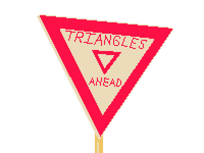
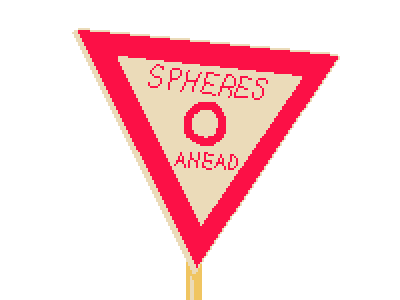

The basics of a path tracer are sending out rays and finding out what they hit. Thus, we need to find a way to
generate rays from the camera in the direction of each pixel on the screen. Since we start with an \((x, y)\)
coordinate in terms of pixels, we can make the rendering resolution agnostic by converting the pixel coordinate
into a normalized image space with \((0, 0)\) being the bottom left of the image and \((1,1)\) being the top
right by dividing by pixel by the screen resolution. By normalizing the image space, we can then convert from
image space into camera space through shifting and scaling the \([0, 1)\) normalized image space range on both
the x and y axes to \([-\tan(\frac{\text{fov}}{2}), \tan(\frac{\text{fov}}{2}))\), with a separate horizontal
and vertical \(\text{fov}\) used on each axis. In addition, since image space is in 2D and camera space is in
3D, we add a standard -1 for the Z axis, since by convention all points on the image plane in camera space are
on \(z = -1\).
This coordinate directly gives us the direction of the ray, since it is at the location of the pixel coordinate
on the image in camera space and the camera (and by extension the origin of the ray) is at \(0, 0\) in camera
space. The vector from the camera to our pixel's transformed coordinates is then the transformed value minus the
origin, which is just the transformed value. Finally, because we know the ray originates at the camera, all we
need to do to convert from the ray in camera space to world space is simply apply the rotation matrix of the
camera to rotate the ray in conjunction with the camera. Since vectors (as opposed to points) aren’t affected by
translations, we don't need to worry about translations or homogenous coordinates, and we can just apply the
rotation matrix. The transformed vector now gives us a vector pointing in the direction from the camera origin
to the pixel's coordinates on the image plane in world space. This vector normalized, along with the camera’s
position in world space serving as the ray's origin, defines a ray going through a specified pixel in world
space. We can also add some randomness by peturbing the ray by a random amount between \([0,1)\)in the \(x\) and
\(y\) directions while in pixel space to sample different directions within the same pixel.
Yielding for triangles

Rays must yield to triangles!
If we can find where rays and objects intersect, we can figure out what rays hit. For simplicity, I only
implemented triangle-ray intersections and sphere-ray intersections. Triangle ray intersections are easily found
by using the barycentric definition of a plane by defining all points on a plane as the weighted average of the
three vertices of a triangle, where all weights add up to one (see earlier explanation of barycentric
coordinates). By substituting the equation for all points on a ray (defined as \(O_{rigin} +
D_{irection}t\) for \(t \ge 0\)) as a point, we can solve for the ray and plane's intersection.
\[
O - v_0 = \beta (v_1 - v_0) + \gamma (v_2 - v_0) - Dt
\equiv
\begin{cases}
p = O + Dt & \text{Ray equation} \\
p = (1-\beta-\gamma) v_0 + \beta v_1 + \gamma v_2 & \text{Barycentric plane}
\end{cases}
\]
This lends itself to an elegant matrix:
\[
\begin{bmatrix}
-D & v_1-v_0 & v_2-v_0
\end{bmatrix}
\begin{bmatrix}
t \\ \beta \\ \gamma
\end{bmatrix}
=
O - v_0
\]
We can solve for \(t, \beta,
\gamma\) using Cramer's rule, giving us the intersection point on the triangle's plane in barycentric
coordinates. Then, by checking if the values of \(\alpha (= 1 - \beta - \gamma), \beta, \gamma \ge 0\), we can
tell if the intersection is within the triangle or not. This process is called the Möller-Trumbore intersection
algorithm.
By using Möller-Trumbore, we get some intersection data for free. The \(t\) value serves as distance along the
ray, and so lets us cut values too close or far from the camera and prevent intersecting occluded objects by
only taking the closest distance. The barycentric coordinates can be used to interpolate between assigned normal
vectors for each vertex on the triangle to give a normal at the intersection point as well.
Stopping when Spheres are Near
Sphere intersections follow the same basic method, but instead substituting the ray equation into an implicitly
defined sphere. Defining the sphere's center as \(c\),
\[
\begin{cases}
p = O + Dt & \text{Ray equation} \\
r^2 = (x-c_x)^2 + (y-c_y)^2 + (z-c_z)^2 = \sum_{1}^{3} (p[i] - c[i])^2 & \text{Implicit Sphere}
\end{cases}
\]
This can be formed into a quadratic equation:
\[
0 = -r^2 + \sum_{1}^{3} (O[i] + D[i]t - c[i])^2
\equiv
0 = (O^2 - 2O\cdot C + C^2 - r^2) + 2D\cdot(O-C)t + D^2t^2
\]

I don't think the joke works in this context...
Which gives us zero roots (no intersection), one root (ray is tangent), or two roots (ray passing through the
sphere). We can then compare \(t\) values in the same way as we did for triangles to only check the nearest
intersections. Spheres also give the ability to compute perfect normals by computing the normalized vector from
the sphere's origin to the intersection point (which we can find by plugging in the computed \(t\) value into
the original ray equation).